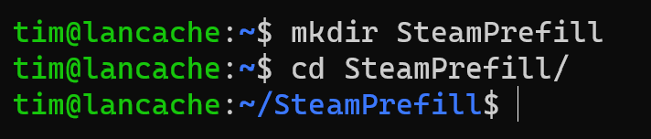
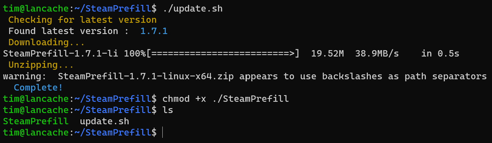

Install Guide For Linux Beginners¶
This guide is written to help Linux beginners successfully download SteamPrefill on their Lancache caching server.
Installing Prerequisites¶
Prior to installing SteamPrefill we will need to make sure that curl, jq, and unzip are already installed on our system. Depending on your machine's configuration, this software may or may not already be installed. Regardless, the following steps will ensure that everything needed is successfully installed.
Note
These steps assume that you are using Ubuntu/Debian. Depending on which Linux distro you are using, you may have to use slightly different commands.
To run the following commands, open up a new terminal session, and enter the following:
# Makes sure that the latest app versions will be installed
apt-get update
# Installs the required software
apt-get install curl jq unzip wget -y
Warning
You may run into a "Could not open lock file" error when running apt-get install, and will need to prefix the command with sudo
Once the install command has finished successfully, we can move on to installing SteamPrefill.
Installing SteamPrefill¶
We will be using a script to assist with installing SteamPrefill for the first time. This will be helpful as it will save us from running several manual steps.
To begin, open up a new terminal session. We will want to create a new directory to install SteamPrefill into. For example, to create the directory and to move into it, run"
mkdir SteamPrefill
cd SteamPrefill/
After running the above commands successfully, you should see similar output in your terminal :

We can now move on to downloading the install script from the repo, and running it to install SteamPrefill
# Downloads the install script
curl -o update.sh --location "https://raw.githubusercontent.com/tpill90/steam-lancache-prefill/master/scripts/update.sh"
# Allows the install script to be executed
chmod +x update.sh
# Does the install!
./update.sh
# Allows SteamPrefill to be executed
chmod +x ./SteamPrefill
If everything worked as expected, you should see output similar to below

SteamPrefill is now installed on your machine! You can now run it with ./SteamPrefill
Next Steps¶
If you are new to SteamPrefill and would like an introductory tutorial, see the Getting Started guide.
Answers to common issues and questions can be found at Frequently Asked Questions.
Alternatively, to see all of the features that SteamPrefill offers, take a look at Detailed command usage